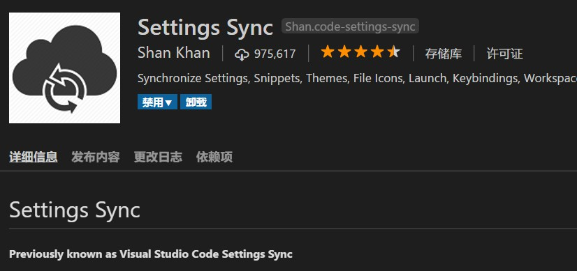
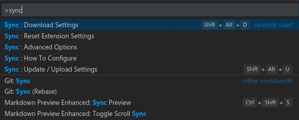
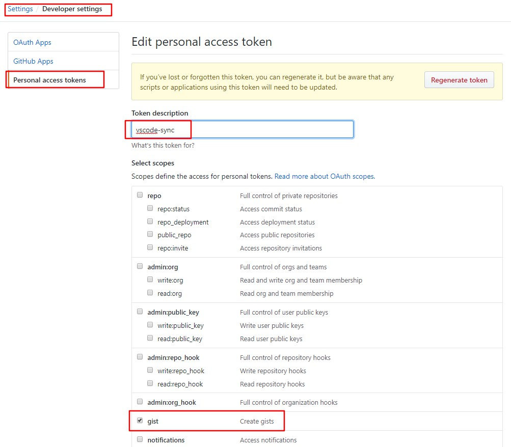

vscode 上插件
setting sync
Settings Sync 这个插件可以通过 github 上面的 gist 来同步你的 vscode 的配置包括插件,自定义按键设置。还能够分享给别人使用。主要用在换电脑.
- 首先当然是下载 vscode 然后安装 Setting Sync

- 按 ctrl+shift+p 填入 sync 可以看到所有命令

然后选择 update 的 快捷键是 alt+shift+u
会弹出一个 github 的登录页,登录有进入 Developer settings => personal access token.这里设置好 gist, 然后会生成一个 token

再按下 alt+shift+u 就输入好了,最后会上传上去,然后就是得到一个 token 和 gist ID .
使用备份就是下载好 vscode 之后, 安装 Setting Sync, 然后按 ctrl+shif+p 搜 sync 选 download.(快捷键 alt+shift+d 当然同上),然后输入 token 在 gist ID . 插件下载要等一会
不行的话 reset 下 有个 Reset Extension Setting
总结下:
- 先去自己的 github 中的 personal access token 中获取 token
- 在使用 alt+shift+u 上传,这里使用 token,得到 gist ID
- 使用这个备份,alt+shift+d,一次输入 token 和 gist ID, 然后就是等待下载咯.
比如
GitHub Token: 293f9e53416c8ae5xx2c6a6e69604125fe80f3e8 自己生成一个， 上传更新才用到
GitHub Gist: b7e3625d05f1b3b31cb33180254a1e7d 这里才是下载更新用到的
GitHub Gist Type: Secret